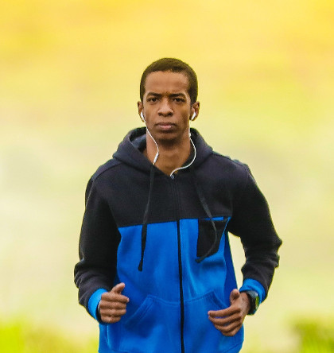
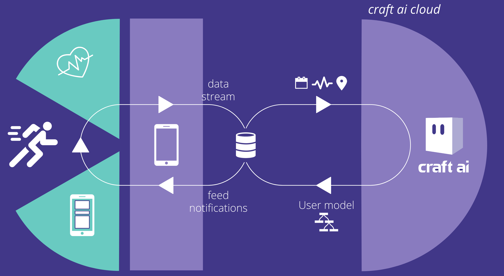
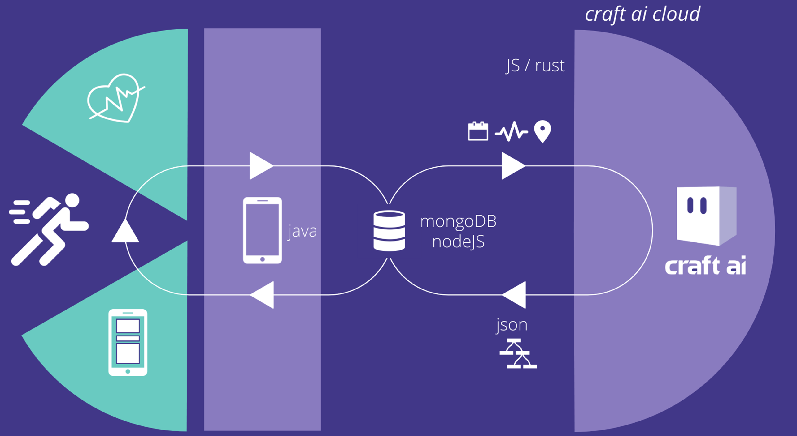
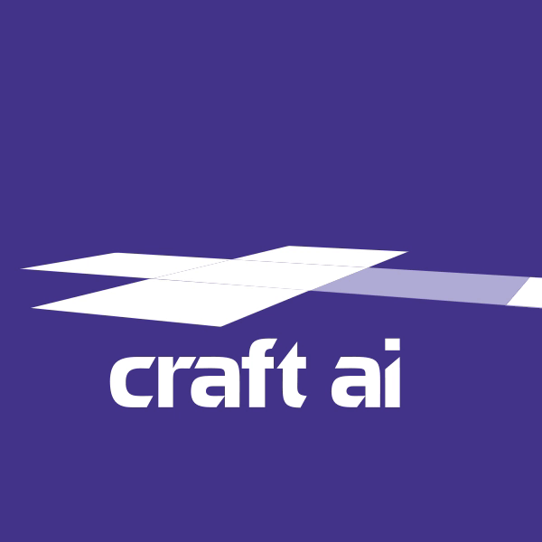

MsC Thesis Defense
Yrieix Leprince
Antoine Amarilli Télécom ParisTech | Clodéric Mars craft ai
customer success
use case
Personalized coaching
Modelling adaptive, evolutionnary and contextual user behaviors
Health coach

Meet John
John's profile
- calories
- heartbeat
- sleep
- smoking

Coaching based on three points:
- Contextual
- Adaptive
John right now
What just happened?
"age": 32,
"gender": "male",
"country": "FR",
...
John tracking data
"timestamp", "event_name", ...
1549300369553, app_launch, ...
1549300393292, calories_fill, ...
1549300434397, heartrate_update, ...
How did it happened?
John's craft ai model
- One to one level
- Continuous Learning
- White Box
How it works
What have I done?
Kmeans - DBScan
How have I been involved?
craft ai presentation
- product team
- customer success team
Project Managment
- Slack
- Weekly meeting
- 1k users release by 2019/03
- 50k users release by 2019/09
MsC Thesis - Telecom ParisTech
made with by
